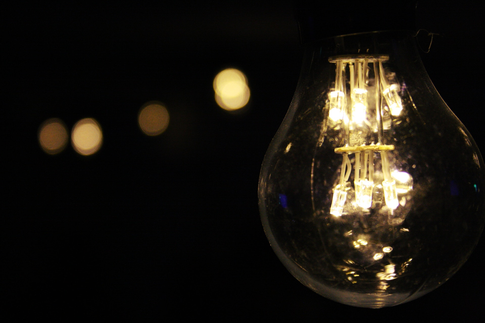

Home
About
Contact
Happiness: A Blessing That Comes From Suffering
by Maya Asmara a year ago
DISCOVER YOUR FAVORITE TOPICS
WORK & PRODUCTIVITY
MENTAL HEALTH
SELF DEVELOPMENT
RELATIONSHIP
BOOK REVIEW

Why We Procrastinate When We Have More Time
by Maya Asmara 6 months ago
WORK & PRODUCTIVITY